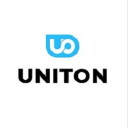

Материал компании

MITEX 2026 · Россия · Стенд 8B1301
ЮНИТОН
Карточка проверена 10 ноября 2026, 09:25 · Источник ↗ · Снимок оригинальной карточки ↗
О компании
Официальный импортёр и представитель торговых марок DLT, BIHUI, RollingDog, MAV на территории СНГ. Оптовая продажа высококачественного инструмента для строительства и ремонта, а также лакокрасочной продукции. Основные направления: инструмент и оборудование для работы с керамогранитом, шлифовальные машины для подготовки стен и потолков перед окраской, профессиональные пылесосы, алмазная и абразивная оснастка, малярно-штукатурный и отделочный инструмент, лакокрасочная продукция.
Контакты
Сайт: https://uniton.proE-mail: cso@uniton.proТелефон: +7(812)602-42-62social: https://t.me/+gsKWH4zjoc4zYTcy
Все контактные сведения из карточки
Контакты Санкт-Петербург, пр-кт Индустриальный, д. 70Б Адрес: 195279, Россия, Санкт-Петербург, Санкт-Петербург, пр-кт Индустриальный, д. 70Б Веб-сайт: https://uniton.pro/ E-mail: cso@uniton.pro Телефон: +7(812)602-42-62
Ранее найденные соцсети — октябрь 2026
Эти ссылки найдены при предыдущем обходе сайтов компаний. Актуальность контактов уточняйте у участника.
Все рубрики участника
Mitex - Рубрикатор
- 1. Электроинструмент и расходные материалы
- 4. Инструмент и оборудование для строительно-монтажных, окрасочных и малярных работ
- 5. Слесарный, монтажный, столярный, ручной инструмент
- 6. Инструменты и оборудование для обработки и резки металла, проволоки, труб, камня, стекла, керамики, пластмасс, дерева
- 10. Алмазный, твердосплавный инструмент и оснастка
- 11. Абразивный инструмент, материалы и оснастка
- 13. Приспособления для мастерских и складов, системы хранения, тара и упаковка
Зал
- Зал № 8
Участник выставки
- MITEX
Видео, каталоги и документы
Материал компании
Rollingdog-Catalogue.pdf
Открыть у участника ↗Источник не удалось загрузить при сборе. Проверьте оригинальную ссылку.
Материал компании
BIHUI Catalog 2024.pdf
Открыть у участника ↗Источник не удалось загрузить при сборе. Проверьте оригинальную ссылку.
Каталог продукции участника
Материалы каталога
Каталоги плиткорезного оборудования BIHUI и малярно-штукатурного инструмента RollingDog 2024
Каталоги плиткорезного оборудования BIHUI и малярно-штукатурного инструмента RollingDog 2024
Каталоги плиткорезного оборудования BIHUI и малярно-штукатурного инструмента RollingDog 2024 Вложения Rollingdog-Catalogue.pdf 24.06.2024 23 36.82 MB BIHUI Catalog 2024.pdf 24.06.2024 15 14.84 MB